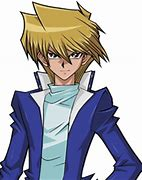
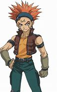
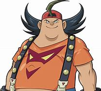
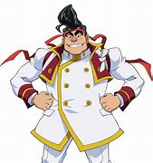
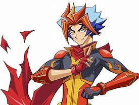
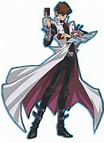
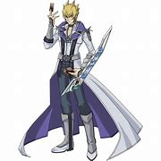

Yu-gi-oh protaginost best friends and rivals
This page is to show you what the protaginost best friends and rivals look like,
their age and name, and their wins and losses in the show yu-gi-oh.
The friends
Duel monsters

- Joey Wheeler
- age:18
- won 14 games
- lost 14 games
GX

- Cyrus Truesdale
- age:17
- won 9 games
- lost 5 games
5ds

- Crow Hogan
- age:21
- won 19 games
- lost 4 games
Zexal

- Bronk Stone
- age:13
- won 3 games
- lost 7 games
ARC-V

- Gong Strong
- age:14
- won 9 games
- lost 6 games
VRAINS

- Theodore Hamilton
/Soulburner
- age:16
- won 9 games
- lost 3 games
The rivals
Duel monsters

- Seto Kaiba
- age:18
- won 20 games
- lost 5 games
GX

- Chazz Princeton
- age:17
- won 73 games
- lost 12 games
5ds

- Jack Atlas
- age:21
- won 172 games
- lost 7 games
Zexal

- Reginald Kastle/Shark
- age:14
- won 25 games
- lost 6 games
ARC-V
- Declan Akaba
- age:15
- won 9 games
- lost 3 games
VRAINS
- Ryokern Kogami/
revolver
- age:16
- won 9 games
- lost 3 games
where i got joey
where i got cyrus
where i got crow
where i got bronk
where i got gong
where i got soulburner